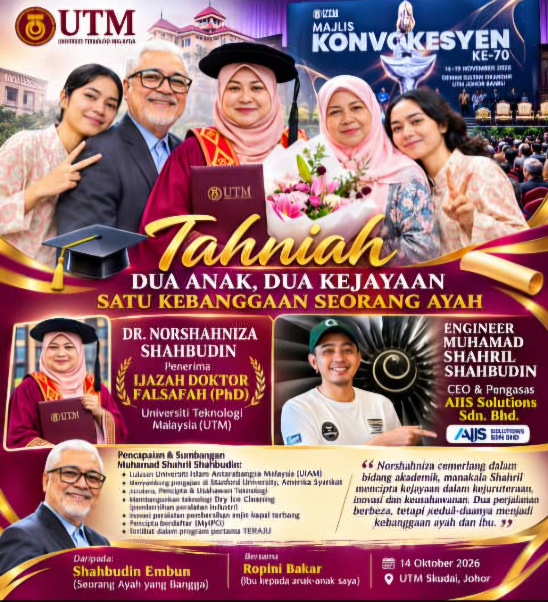

14 OKTOBER 2026 — TARIKH KERAMAT DALAM LIPATAN SEJARAH KELUARGA KAMI
ALHAMDULILLAH… DUA ANAK, DUA KEJAYAAN, SATU KEBANGGAAN SEORANG AYAH!

Hari ini merupakan antara detik paling membahagiakan dan paling bermakna dalam kehidupan saya sebagai seorang bapa.
Pada 14 Oktober 2026, saya bersama Ropini Bakar, ibu kepada anak-anak saya, anak-anak serta cucu-cucu berada di Dewan Konvokesyen Universiti Teknologi Malaysia (UTM), Skudai, Johor, untuk menyaksikan satu detik bersejarah apabila anakanda kesayangan kami, DR. NORSHAHNIZA SHAHBUDIN, menerima Ijazah Doktor Falsafah (PhD).
Sebagai seorang bapa, sukar untuk saya menggambarkan perasaan apabila melihat anak sendiri melangkah ke pentas menerima segulung ijazah kedoktoran.
Di sebalik senyuman dan kegembiraan pada hari ini, tersimpan perjalanan panjang yang pastinya dipenuhi pengorbanan, kesabaran, usaha gigih, cabaran dan doa yang tidak pernah putus.
Kejayaan ini bukan hadir dalam sekelip mata. Ia adalah hasil ketekunan seorang anak yang tidak pernah mengalah dalam mengejar ilmu dan cita-citanya.
ANAKKU, DR. NORSHAHNIZA…
Hari ini bukan sekadar hari menerima segulung ijazah. Hari ini membuktikan bahawa usaha, kesungguhan dan kesabaran akhirnya membuahkan hasil.
Ayah dan ibu amat berbangga dengan pencapaianmu. Semoga ilmu yang diperoleh menjadi manfaat kepada agama, bangsa dan negara.
KEJAYAAN SEORANG LAGI ANAK — ENGINEER MUHAMAD SHAHRIL SHAHBUDIN
Dalam kegembiraan meraikan kejayaan kakaknya, saya juga ingin merakamkan setinggi-tinggi penghargaan dan tahniah kepada seorang lagi anakanda saya, ENGINEER MUHAMAD SHAHRIL SHAHBUDIN, adik kepada Dr. Norshahniza.
Shahril juga telah membuktikan bahawa pendidikan dan ilmu pengetahuan mampu membuka jalan kepada kejayaan yang lebih besar.
Selepas mengikuti pengajian di International Islamic University Malaysia (IIUM) serta Stanford University di Amerika Syarikat, beliau mengorak langkah sebagai seorang jurutera, pencipta dan usahawan dalam bidang teknologi kejuruteraan.
Lebih membanggakan, beliau merupakan CEO dan Founder AIIS Solutions Sdn. Bhd., sebuah syarikat yang memberi tumpuan kepada penyelesaian kejuruteraan dan teknologi industri.
Beliau turut terlibat dalam pembangunan teknologi pembersihan peralatan industri menggunakan kaedah Dry Ice Cleaning, termasuk aplikasi berkaitan enjin pesawat.
Usaha inovasi dan penciptaan ini turut dikaitkan dengan rekod permohonan harta intelek di bawah MyIPO, yang menyenaraikan nama Muhamad Shahril Bin Shahbudin sebagai salah seorang pencipta.
Saya juga amat berbangga dengan penglibatan beliau dalam program awal TERAJU yang membuka ruang kepada pembangunan usahawan Bumiputera dalam bidang kejuruteraan dan teknologi.
Bagi seorang bapa, melihat anak bukan sahaja berjaya dalam akademik tetapi mampu menterjemahkan ilmu kepada penciptaan, inovasi dan perniagaan merupakan satu kepuasan yang sukar digambarkan.
Norshahniza membawa kejayaan dalam dunia akademik, manakala Shahril mengembangkan ilmu dalam dunia kejuruteraan, inovasi dan keusahawanan.
Dua perjalanan berbeza, tetapi kedua-duanya membuktikan bahawa ilmu merupakan asas kepada kecemerlangan.
PESANAN SEORANG AYAH
Saya tidak pernah meminta anak-anak menjadi kaya atau terkenal.
Cukuplah mereka menjadi insan berilmu, berakhlak mulia, berjaya dalam kehidupan, memberi manfaat kepada masyarakat dan sentiasa mengenang jasa ibu bapa.
Kepada Ropini Bakar, ibu kepada anak-anak saya, terima kasih atas segala kasih sayang, pengorbanan dan doa dalam membesarkan anak-anak kita.
Kepada semua anak-anak dan cucu-cucu, ketahuilah bahawa setiap kejayaan kalian merupakan kebahagiaan dan hadiah paling berharga buat ayah dan ibu.
Saya ingin berpesan kepada generasi muda:
Jangan pernah takut untuk bermimpi besar. Jangan mudah berputus asa. Teruskan menuntut ilmu dan berusaha walaupun perjalanan menuju kejayaan tidak mudah.
Ilmu merupakan harta yang tidak akan habis, pendidikan ialah jambatan masa depan, manakala keberanian mencipta sesuatu yang baharu mampu membawa manfaat kepada seluruh masyarakat.
TAHNIAH DR. NORSHAHNIZA SHAHBUDIN!
Semoga kejayaan ini menjadi inspirasi kepada generasi seterusnya untuk terus mengejar ilmu, membina kecemerlangan dan mencipta masa depan yang lebih baik.
KEMBALI KE HALAMAN UTAMA - NANIS.COM